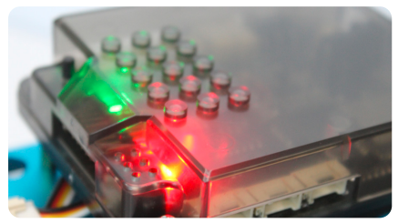
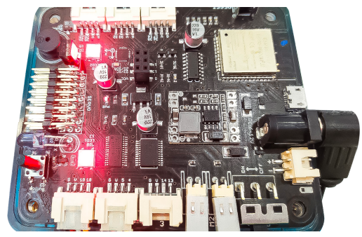
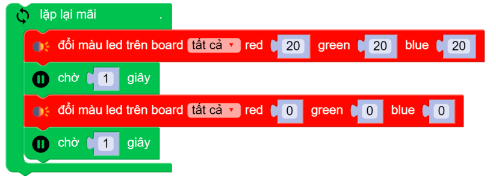
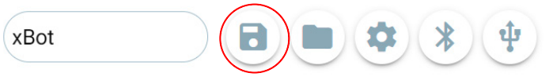
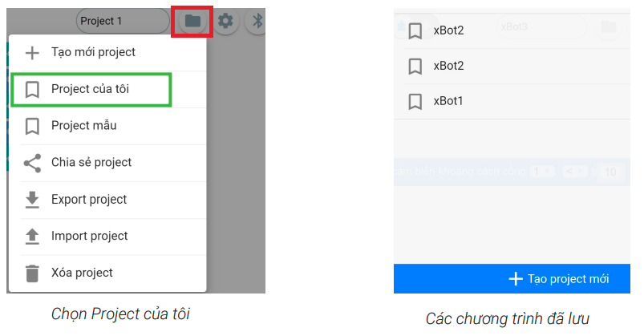
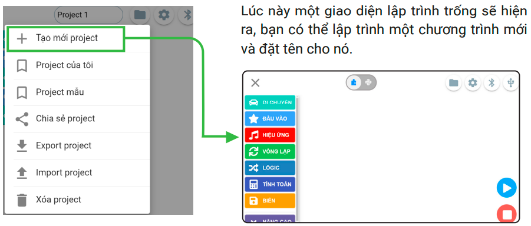
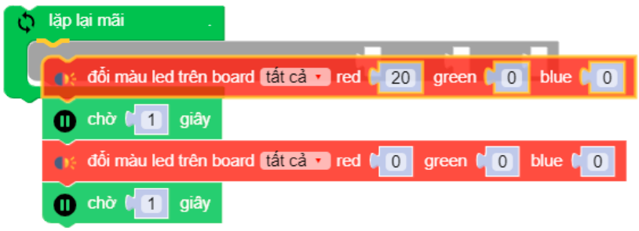
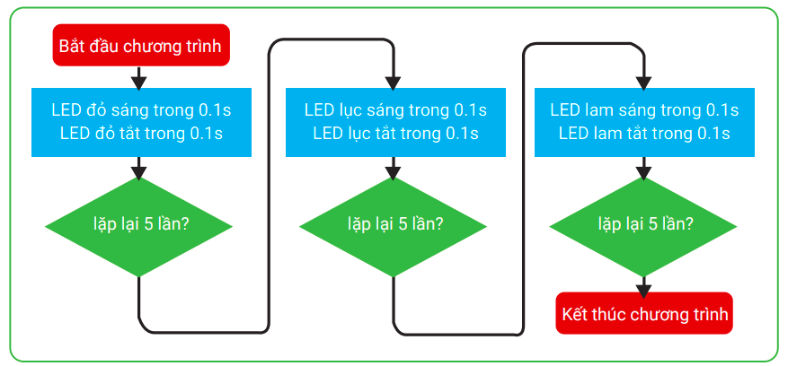
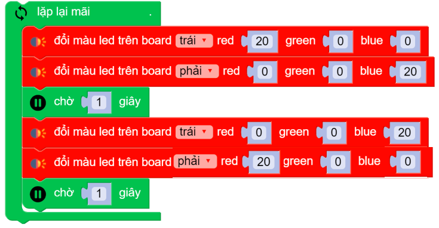

4. Hướng dẫn viết chương trình
1. Hướng dẫn viết chương trình
Chúng ta hãy viết một chương trình đơn giản để điều khiển 2 đèn LED đa màu có trên xBot.
Trước tiên bạn cần làm quen với đèn LED RGB và các khối lệnh liên quan sẽ được sử dụng trong chương trình.
{kind=link}
Đèn LED RGB trên robot
xBot được tích hợp sẵn 2 đèn LED RGB. Đèn này được cấu tạo từ 3 đèn màu đỏ (Red), xanh lá (Green), xanh dương (Blue). Bạn có thể lập trình để thay đổi dộ sáng của 3 màu này.
{kind=link}
Các khối lệnh dùng trong chương trình
{kind=link}
{kind=link}
{kind=link}
Sau khi bạn đã nắm được các khối lệnh cần sử dụng, bạn hãy kéo chúng vào vùng viết chương trình và kết nối như hình dưới đây:
{kind=link}
Chạy chương trình
Bạn cần kết nối với robot bằng cách nhấn vào biểu tượng Bluetooth.
{kind=link}
Chọn robot có tên đúng với robot của bạn để kết nối.
{kind=link}
Khi kết nối thành công, nhấn vào nút chạy chương trình.
Hãy quan sát xem màu sắc 2 đèn LED RGB trên xBot thay đổi như thế nào nhé.
Lưu chương trình
Để lưu một chương trình mới, bạn hãy nhấn nút Lưu.
{kind=link}
Để mở lại chương trình đã lưu, vào nút quản lý chương trình và chọn Project của tôi. Toàn bộ các chương trình đã lưu sẽ hiện ra và bạn có thể nhấn vào để mở chương trình cần xem lại.
{kind=link}
Tạo một chương trình mới
Để tạo mới một project, bạn chọn nút Quản lý chương trình và chọn Tạo mới Project.
{kind=link}
Thay khối lệnh lặp lại mãi mãi bằng khối lệnh lặp lại theo số lần
Bạn hãy thử thay đổi chương trình để hiệu ứng đèn LED nhấp nháy hấp dẫn hơn bằng cách nhấp nháy lần lượt từng màu đỏ, xanh lá, xanh dương, mỗi màu nhấp nháy 5 lần.
Trước tiên, bạn hãy thay khối lệnh lặp lại mãi mãi bằng khối lệnh lặp lại 5 lần để chỉ nháy đèn LED 5 lần. Các bước như sau:

Kéo các khối lệnh bên trong khối lặp lại mãi mãi ra ngoài.
{kind=link}
{kind=link}
{kind=link}
{kind=link}
Sơ đồ hoạt động của chương trình như sau:
{kind=link}
Sau khi hoàn thiện, bạn hãy chạy chương trình để xem đèn LED hoạt động nhưu thế nào.
2. Bài tập mở rộng
Cùng bật tắt từng đèn LED riêng biệt nào! Bạn hãy thay đổi tùy chọn [tấtcả] thành [trái] hoặc [phải] trong khối lệnh thay đổi màu sắc.
Chương trình tham khảo:
{kind=link}
3. Câu hỏi ôn tập
Có bao nhiêu môi trường lập trình cho xBot? Kể tên từng loại!
Nêu tên các khu vực trong giao diện lập trình của OhStem App?
Có bao nhiêu thao tác với khối lệnh? Kể tên và cách thực hiện từng thao tác.